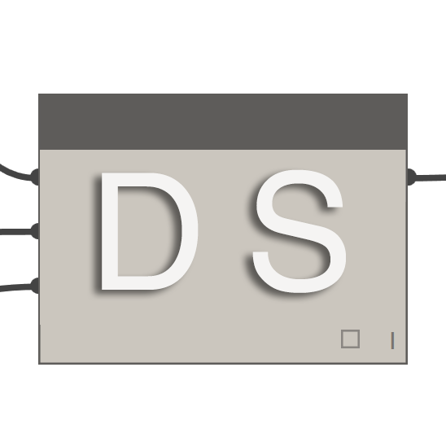
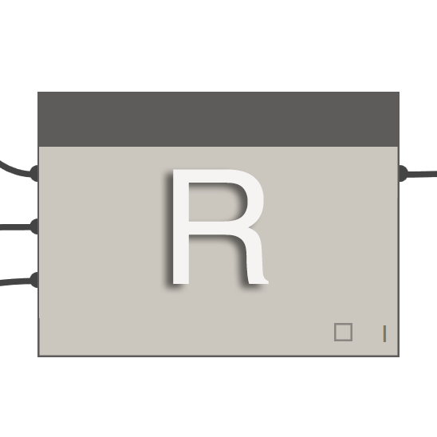

Dynamo 套件
以下是 Dynamo 社群中一些較常用套件的清單。開發人員，請加入至清單！請記住，Dynamo Primer 是開放原始碼產品！
| ARCHI-LAB | 造訪官方 archi-lab 網站 | |
|---|---|---|
| archi-lab 是超過 50 種自訂套件的集合，可大幅提升 Dynamo 與 Revit 互動的能力。archi-lab 套件中包含的節點各不相同，從基本清單作業到 Revit 的進階分析可視化框架節點，不一而足。 |  |
| BIMORPH NODES | 造訪 BimorphNodes 字典 | |
|---|---|---|
| BimorphNodes 收集各種功能強大的公用程式節點。此套件的重點功能包括非常有效率的衝突偵測和幾何圖形相交節點、ImportInstance (CAD) 曲線轉換節點，以及可解決 Revit API 局限性的連結元素收集器。若要瞭解可用的完整節點範圍，請造訪 BimorphNodes 字典。 |  |
| BUMBLEBEE FOR DYNAMO | 造訪官方 BumbleBee 網站 | |
|---|---|---|
| Bumblebee 是實現 Excel 與 Dynamo 之間互通性的外掛程式，可大幅提升 Dynamo 讀取及寫入 Excel 檔案的能力。 |  |
| CLOCKWORK FOR DYNAMO | 造訪 Clockwork For Dynamo GitHub | |
|---|---|---|
| Clockwork 是適用於 Dynamo 視覺程式設計環境的自訂節點集合。它不但包含許多 Revit 相關節點，還包含許多適用於諸如以下各種其他用途的節點：清單管理、數學作業、字串作業，單位轉換、幾何作業 (主要是邊界框、網面、平面、點、曲面、UV 與向量) 及面板化。 |  |
 |
DATA | SHAPES | [請造訪 Github 上的 Data | Shapes](https://github.com/MostafaElAyoubi/Data-shapes) |
|---|---|---|---|---|
| DataShapes 是一套件，旨在延伸 Dynamo 腳本的使用者功能。其聚焦在為 Dynamo 播放器加入更強大的功能。若要取得更多資訊，請造訪 https://data-shapes.net/。要建立精彩 Dynamo 播放器工作流程？使用此套件。 |  |
|  | DYNAMO SAP | 在核心工作室造訪 DynamoSAP 專案 |
|---|---|---|
| DynamoSAP 是在 Dynamo 基礎上建置的適用於 SAP2000 的參數式介面。藉由該專案，設計師與工程師能以高生產力的方式建立及分析 SAP 中的結構系統，同時使用 Dynamo 來驅動 SAP 模型。該專案指定了一些通用工作流程 (在隨附的範例檔案中對這些工作流程進行了描述)，並提供在 SAP 中自動執行典型工作的諸多機會。 |  |
 |
DYNAMO UNFOLD | 造訪 DynamoUnfold GitHub |
|---|---|---|
| 藉由此資源庫，使用者可以展開曲面與 polysurface 幾何圖形，從而延伸 Dynamo/Revit 的功能。藉由該資源庫，使用者可以先將曲面轉換為平面嵌合拓樸，然後使用 Dynamo 中的 ProtoGeometry 工具將其展開。此套件還包括一些實驗節點與一些基本範例檔案。 |  |
 |
DYNASTRATOR | 在 Package Manager 下載 Dynastrator |
|---|---|---|
| 使用 .svg 從 Illustrator 或網路匯入向量作品。您可藉此將手動建立的圖面匯入至 Dynamo 以執行參數式作業。 |  |
 |
ENERGY ANALYSIS FOR DYNAMO | 在 GitHub 上造訪 Energy Analysis for Dynamo 專案 |
|---|---|---|
| 藉由 Energy Analysis for Dynamo，可以在 Dynamo 0.8 中執行參數式能源塑型與整棟建築的能源分析工作流程。藉由 Energy Analysis for Dynamo，使用者可以在 Autodesk Revit 中設定能源模型，提交至 Green Building Studio 進行 DOE2 能源分析，然後深入研究分析傳回的結果。此套件的開發者是 Thornton Tomasetti 的核心工作室。 |  |
 |
FIREFLY FOR DYNAMO | 在 Dynamo Package Manager 下載 Firefly |
|---|---|---|
| Firefly 是節點的集合，藉由這些節點，Dynamo 可以與輸入/輸出裝置 (例如 Arduino 微控制器) 通訊。由於會「即時」發生資料流動，因此 Firefly 會為透過網路攝影機、行動電話、遊戲控制器、感應器等在數位與實體環境之間進行互動式原型開發帶來許多機會。 |  |
 |
LUNCHBOX FOR DYNAMO | 在試驗場檢驗 Lunchbox for Dynamo |
|---|---|---|
| LunchBox 是可重複使用的幾何圖形及資料管理節點的集合。這些工具已通過搭配使用 Dynamo 0.8.1 與 Revit 2016 的測試。工具包括用於曲面面板化的節點、幾何圖形、Revit 資料集合等！ |  |
 |
MANTIS SHRIMP | 造訪官方 Mantis Shrimp 網站。 |
|---|---|---|
| Mantis Shrimp 是互通性專案，您可藉此將 Grasshopper 及/或 Rhino 幾何圖形輕鬆匯入至 Dynamo。 |  |
 |
MESH TOOLKIT | 造訪 Dynamo Mesh Toolkit GitHub |
|---|---|---|
| Dynamo Mesh Toolkit 可提供對網面幾何圖形進行處理的許多有用工具。此套件的功能包括匯入外部檔案格式的網面、根據預先存在的 Dynamo 幾何圖形物件產生網面，以及根據頂點與連接資訊手動建置網面。此外，該工具套件還包括用於修改及修復網面幾何圖形的工具。 |  |
 |
OPTIMO | 造訪 Optimo GitHub |
|---|---|---|
| 藉由 Optimo，Dynamo 使用者可以使用各種演化演算法，以最佳化自己定義的設計問題。使用者可以定義問題目標或目標組，以及特定的健康度函數。 |  |
|  | RHYNAMO | 造訪 Rhynamo Bitbucket |
|---|---|---|
| 藉由 Rhynamo 節點資源庫，使用者可以在 Dynamo 內，讀取及寫入 Rhino 3DM 檔案。Rhynamo 透過使用 McNeel 的 OpenNURBS 資源庫，可以採用能在 Rhino 與 Revit 之間順利交換幾何圖形及資料的新工作流程，從而將 Rhino 幾何圖形轉換為可使用的 Dynamo 幾何圖形。此套件也包含一些實驗節點，藉此可「即時」存取 Rhino 指令行。 |  |
 |
RHYTHM | 在 GitHub 上造訪 Rhythm |
|---|---|---|
| 初看 Rhythm 並無特殊之處。它不包含任何複雜的程式碼或類似內容。但是，Rhythm 展示出務實的思考與勤勉。此套件的構想可協助使用者在 Revit 中保持 Rhythm 與 Dynamo 共存。Rhythm 主要包含現成的 Dynamo 節點，使用者將這些節點套用至 Revit 環境時可以熟練使用。 |  |